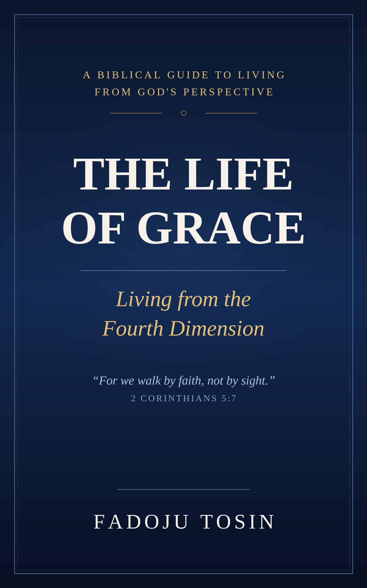

Book One
The Life of Grace
Living from the Fourth Dimension
A biblical guide to seeing, thinking, speaking and living from God's perspective.
Books • Biblical Teaching • Grace Encounters
A growing home for Christian books and teachings that help believers see what God has provided in Christ, receive by faith, and live responsibly from grace.
It changes the foundation from which responsibility is carried. The aim of these resources is not simply to inform, but to help biblical truth shape the way we believe, work, persevere, steward, serve and live.
Read online in a focused chapter-by-chapter reader, save your place automatically, and return whenever you are ready.

Book One
Living from the Fourth Dimension
A biblical guide to seeing, thinking, speaking and living from God's perspective.

New Book
Working From Grace, Not for Grace
A practical exploration of what changes when grace shapes not only salvation, but the way we think, work, expect, manage resources, relate to people and respond to setbacks.
The Assembly of Sons presents
Word, prayer and worship gatherings created to move the message beyond the page into shared study, prayer, fellowship and response.
A home for Christian books, biblical teaching and gatherings centred on receiving what God has provided in Christ and living from grace.
The Assembly of Sons brings together written teaching, chapter-by-chapter reading, audio where available, practical study resources and Grace Encounter gatherings in one place. It is designed to grow with future books and teachings rather than remain a website for only one title.